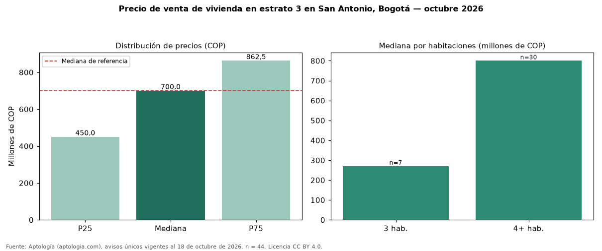

Precio de venta de vivienda en estrato 3 en San Antonio, Bogotá — octubre 2026
En San Antonio, Bogotá, la mediana de precio de venta de vivienda en estrato 3 es COP 700 millones (n = 44 avisos únicos). Es prácticamente la misma mediana de toda la oferta de venta en San Antonio (COP 700 millones). Por metro cuadrado, la mediana es COP 3.432.421/m² (−4 % frente a COP 3.585.657/m²). Por habitaciones: 3 habitaciones, COP 270 millones (n = 7); 4 o más habitaciones, COP 800 millones (n = 30). El rango intercuartílico va de COP 450 millones a COP 862 millones (razón 1,9). El área mediana es 238 m² (referencia: 194 m²). La antigüedad mediana declarada es de 15 años. Datos abiertos CC BY 4.0 de Aptología; fuente y búsqueda de inmuebles: https://www.aptologia.com/estrato-de/bogota/san-antonio. Archivos: PDF de 2 páginas, CSV con las cifras y gráfica PNG.

| Avisos únicos | 44 |
|---|---|
| Percentil 25 | COP 450.000.000 |
| Mediana | COP 700.000.000 |
| Percentil 75 | COP 862.500.000 |
| Mediana por m² | COP 3.432.421 |
Fuente: avisos vigentes de portales inmobiliarios recopilados por Aptología, deduplicados (mínimo 30 avisos únicos por celda). Precios pedidos, no cerrados. Fecha: 2026-10-18.